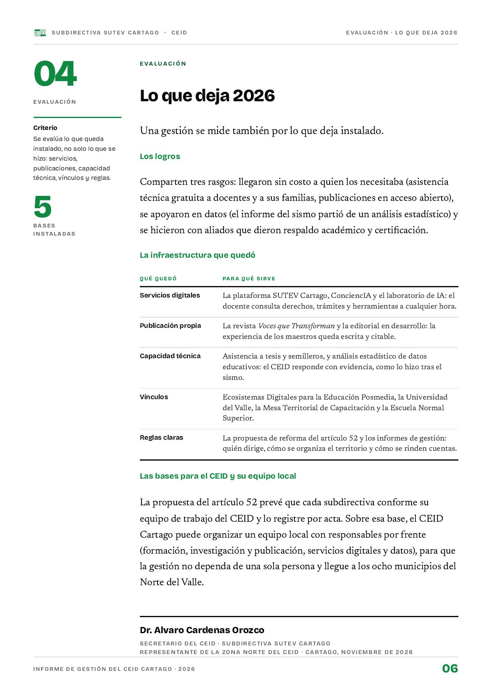

Lo que deja 2026
Una gestión se mide también por lo que deja instalado: servicios digitales, publicación propia, capacidad técnica, vínculos y reglas claras.
PDF · 1 pág. · 191 KBUna gestión se mide también por lo que deja instalado. Se evalúa lo que queda, no solo lo que se hizo: servicios, publicaciones, capacidad técnica, vínculos y reglas.
Los logros
Comparten tres rasgos: llegaron sin costo a quien los necesitaba (asistencia técnica gratuita a docentes y a sus familias, publicaciones en acceso abierto), se apoyaron en datos (el informe del sismo partió de un análisis estadístico) y se hicieron con aliados que dieron respaldo académico y certificación.
- 22investigaciones con asistencia técnica gratuita
- 38sedes documentadas tras el sismo
- 6tomos MILC en acceso abierto
Fuente: Informe de gestión 2026.
La infraestructura que quedó
- Servicios digitales. La plataforma SUTEV Cartago, ConciencIA y el laboratorio de IA: el docente consulta derechos, trámites y herramientas a cualquier hora.
- Publicación propia. La revista Voces que Transforman y la editorial en desarrollo: la experiencia de los maestros queda escrita y citable.
- Capacidad técnica. Asistencia a tesis y semilleros, y análisis estadístico de datos educativos: el CEID responde con evidencia, como lo hizo tras el sismo.
- Vínculos. Ecosistemas Digitales para la Educación Posmedia, la Universidad del Valle, la Mesa Territorial de Capacitación y la Escuela Normal Superior.
- Reglas claras. La propuesta de reforma del artículo 52 y los informes de gestión: quién dirige, cómo se organiza el territorio y cómo se rinden cuentas.
Las bases para el CEID y su equipo local
La propuesta del artículo 52 prevé que cada subdirectiva conforme su equipo de trabajo del CEID y lo registre por acta. Sobre esa base, el CEID Cartago puede organizar un equipo local con responsables por frente (formación, investigación y publicación, servicios digitales y datos), para que la gestión no dependa de una sola persona y llegue a los ocho municipios del Norte del Valle.
Firma el informe Alvaro Cardenas Orozco, secretario del CEID de la Subdirectiva SUTEV Cartago y representante de la Zona Norte del CEID (Cartago, noviembre de 2026).
Así se ve en el informe
1 página